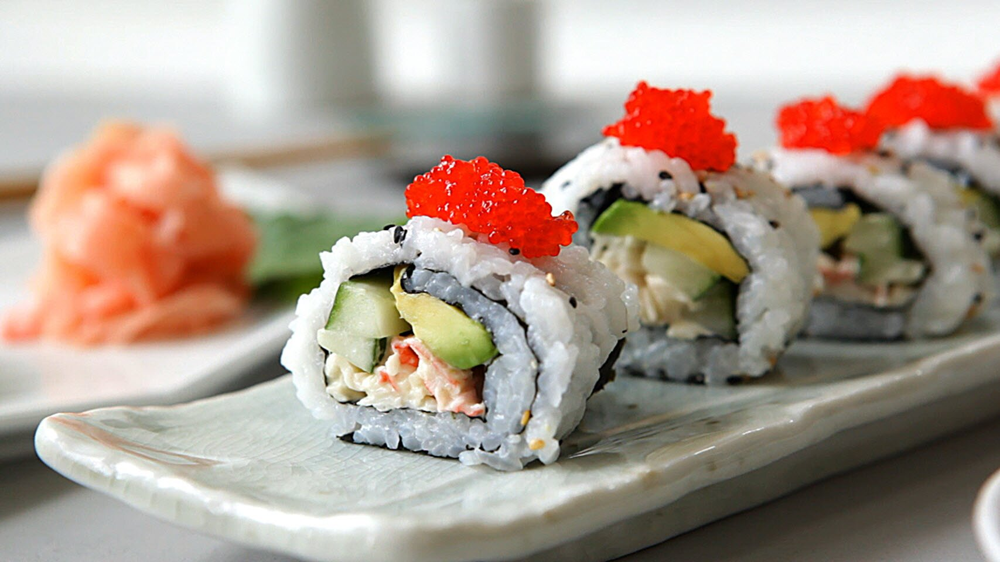

California Roll

Description
This is a classic California roll recipe, great for those who are just learning to make sushi. Serve as an appetizer or as part of a Japanese meal.
Ingredients
- Some cucumber, sliced into spears
- Some finely chopped crab sticks
- Some mayonnaise
- Some sheets of nori (dry seaweed)
- Cooked sushi rice
- Some sesame seeds
- An avocado, sliced
- Some tobiko (flying fish roe)
Steps
- Stir chopped crab sticks and mayonnaise together in a small bowl.
- Lay a sheet of nori on a bamboo mat. Pat a thin, even layer of rice over the nori with wet hands, leaving a little edge at the bottom. Sprinkle rice with sesame seeds. Carefully flip over.
- Add some of the crab mixture in a line across the sheet about 1/3 of the way from the top. Layer with 1 or 2 cucumber spears and 1 to 3 avocado slices
- Using the bamboo mat, roll the sheet tightly into a cylinder, starting at the top edge. Moisten the uncovered edge with water and finish rolling once you reached the bottom. Repeat with the remaining ingredients.
- Slice each roll into 3/4 inch pieces. Garnish each piece with 1/8 teaspoon tobiko